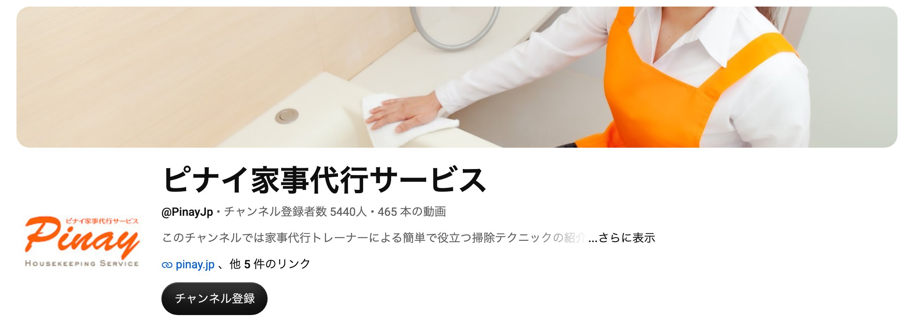
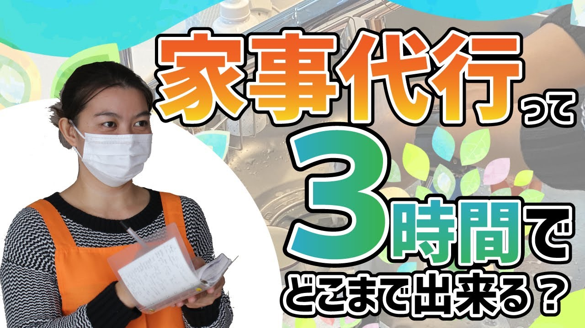
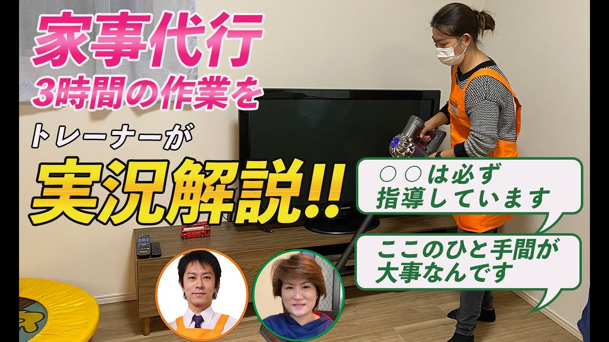
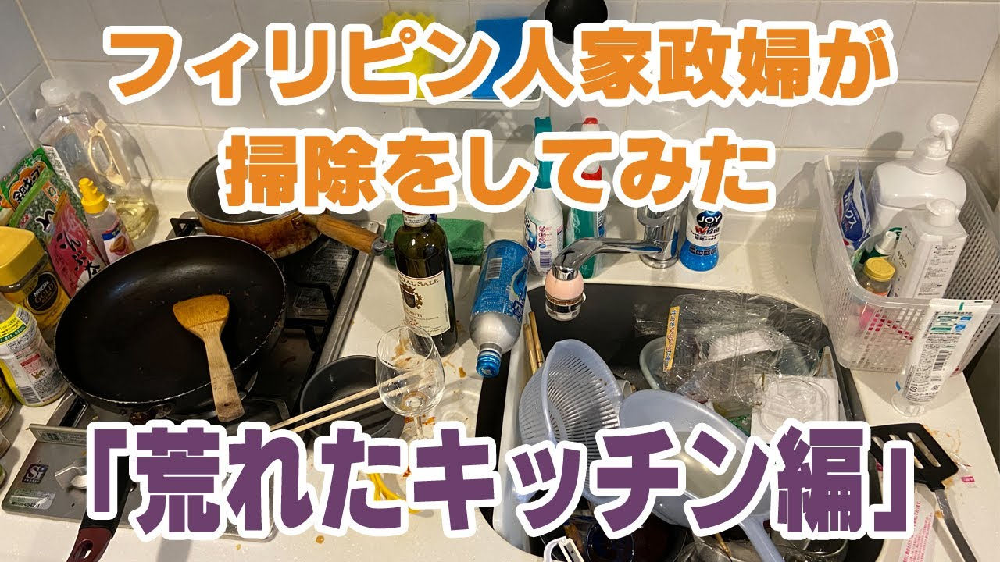

株式会社ASSIST 御中
YouTube運用
ご提案資料
家事代行を中心に、不用品回収・遺品整理まで
東海3県のご依頼をYouTubeから集めるご提案
2026年11月15日
01 前提の共有
現在の集客と、YouTubeで得られる効果
くらしのマーケット
値段で比べられる
問い合わせは一番多いが
安さで選ばれやすい
同じ地域の業者が並び
料金だけで比べられて
しまう状態です。
不用品回収の依頼
一見のお客様が中心
仕事の波が大きく
動き続けないと回らない
先月は受けきれず、今月は
依頼が少なく、次の依頼にも
つながりにくい状態です。
YouTube
ご提案
家政夫のアニキを見て
決めた人から依頼が来る
家事代行や片付けを調べる人が
家政夫のアニキの動画を見て、
市川様に頼むと決めてから
連絡します。
※前回のお打ち合わせで市川様から伺ったお話をもとに、弊社で整理したものです。
株式会社ASSIST御中 YouTube運用 ご提案資料 ｜ 02
02 YouTubeの一番のメリット
顧客の質の向上
くらしのマーケットの問い合わせ
いちばん安い
業者を探す人
同じ地域の業者を並べて
料金だけで比べるので
値下げの話から始まります。
YouTubeで得られること
家政夫のアニキを見て
頼むと決めた人からの依頼
「家事代行 名古屋」などで調べ
作業の動画を何本か見て、
頼むと決めてから連絡します。
再生数は追いません。東海3県で、家事代行を頼みたい人に絞って届けます。
株式会社ASSIST御中 YouTube運用 ご提案資料 ｜ 03
03 チャンネルの方針
家事代行の選び方も、家の片付け方も、事業の裏側も
全部見せる家政夫のアニキのチャンネル
誰に・ゴール
東海3県で家事や片付けに困っている人 → 家事代行・不用品回収・遺品整理
選び方と片付け方の回で検索から見つけてもらい、事業の裏側の回で家政夫のアニキのファンになってもらいます。
選び方
お得で失敗しない
家事代行の選び方
1時間4,000〜5,000円で
どこまで頼めるかを、
現場の作業で見せます。
片付け方
不用品と遺品の
片付け方
自分でできることと、
業者に頼むことの分け方を
現場で見せます。
事業の裏側
家政夫のアニキが
事業をつくる過程
家事代行を東海に広げ、
加盟店を集めるまでの
挑戦を毎回見せます。
株式会社ASSIST御中 YouTube運用 ご提案資料 ｜ 04
04 家事代行のYouTube
作業の中身を見せる、家事代行のYouTube

家事代行の作業を見せた回（再生数は2026年11月10日時点）

4.8万回

2.3万回

1.0万回
男性の家政夫が出る家事代行のチャンネルは、「家事代行」「家政婦」など9語で検索しても見当たりませんでした（2026年11月10日）。
株式会社ASSIST御中 YouTube運用 ご提案資料 ｜ 05
05 狙う視聴者
東海3県で、家事代行を探している人
視聴者1
共働きで家事が
回らない30〜40代
掃除や片付けが追いつかない。
まとめて頼める人を探している。
SEO：家事代行 名古屋
家事代行 掃除
視聴者2
高齢の親の家事を
手伝いたい40〜60代
親だけでは家事がきつい。
重い物や不用品も片付けたい。
SEO：家事代行 片付け
実家の片付け 業者
視聴者3
一人暮らしで
部屋が散らかった人
仕事が忙しく、片付ける
時間がない。安く頼みたい。
SEO：家事代行 一人暮らし
家事代行 おすすめ
東海に絞る理由
東海の家事代行のチャンネルは、まだ少ない
家事代行を頼む人は、家まで来てもらえる近くの会社を探すので、地域を絞っても問い合わせの数は十分に見込めます。
全国の家事代行会社のチャンネル（ピナイ）
登録者 5,440人
東海の家事代行チャンネル
いちばん大きくて 263人
東海の主な家事代行チャンネル（2026年11月10日時点）：リズメリット（名古屋市）263人／家事代行アシスト（名古屋市）35人／株式会社サイテックス（田原市）20人。
※視聴者像は想定です。株式会社ASSIST様に実際に来ているご相談に合わせて直します。
株式会社ASSIST御中 YouTube運用 ご提案資料 ｜ 06
06 企画の切り口
家事代行を頼む前の疑問への答えと、地元の現場
1
家事代行、3時間でどこまでできる？
→ 実際の作業の流れと料金
2
家事代行は高い？
→ 1時間4,000〜5,000円で頼めること
3
家政夫に頼める力仕事
→ 家具の移動、重い物、不用品の運び出し
4
家事代行と片付け業者、何が違う？
→ まとめて頼むと処分代が減る理由
5
家事代行の会社、どう選ぶ？
→ 頼む前に確かめたい5つのこと
6
遺品整理、何から始める？
→ 親の家で最初にやることと費用
7
共働き家庭の家事代行密着
→ 作業の一部始終と、かかった料金
8
実家の遺品整理と掃除密着
→ 仕分けから処分、掃除までまとめて
「密着」の回では、岡崎市など地元の現場で、作業の様子と料金をそのまま見せます。
株式会社ASSIST御中 YouTube運用 ご提案資料 ｜ 07
07 動画の3本柱
現場密着、ノウハウ語り、事業づくりの挑戦
① 現場密着
目的：検索から依頼を取る
家事代行と片付けの
現場に密着する動画
掃除、不用品回収、遺品整理の
前と後、手順、料金まで見せ、
「この人なら家に上げても
大丈夫」と思ってもらいます。
② ノウハウ語り
目的：頼む前の疑問に答える
家事代行の選び方と
片付け方を語る動画
料金の相場、会社の選び方、
遺品整理の進め方を、
市川様が自分の言葉で
話します。
③ 挑戦動画
目的：市川様を知ってもらう
事業をつくる過程を
追う動画
家事代行を東海に広げて
いく挑戦を毎回見せます。
できあがる前から見た人が
ファンになります。
挑戦動画は、将来フランチャイズの加盟者を集めるときにも使えます。
株式会社ASSIST御中 YouTube運用 ご提案資料 ｜ 08
08 問い合わせまでの流れ
YouTubeからの流入を、公式LINE経由で見積もり依頼へ
STEP 1
家事や片付けの
情報収集
料金や会社を
調べて動画を見る
STEP 2
現場の
動画を見る
作業の様子と
市川様を知る
STEP 3
公式LINEに
写真を送る
部屋の写真で
見積もりを相談
STEP 4
無料の
お見積もり
家に伺って
内容を決める
GOAL
家事代行・
不用品回収・
遺品整理の
ご依頼へ
動画の概要欄に、電話番号と公式LINEのリンクを載せます。
株式会社ASSIST御中 YouTube運用 ご提案資料 ｜ 09
09 効果
YouTubeで得られる効果
効果1
資産になる動画が
24時間回り続ける
Instagramの投稿は数日で
流れますが、動画は公開後も
検索で見られ続けます。
月4本なら1年で48本です。
効果2
今の集客の
CVRが上がる
ホームページとInstagramに
YouTubeのリンクを貼ります。
作業の様子を見てから
頼む人が増えます。
効果3
AI検索で
上位に表示されやすい
ChatGPTやGoogleのAIに
家事代行の会社を聞いた人に
市川様の動画が
答えとして出やすくなります。
将来の効果
フランチャイズの加盟者集め
挑戦動画を見てきた人は、加盟する前から
仕事の中身と市川様の考え方を知っています。
※GoogleのAI Overviewsが答えに使う情報源のうち、29.5%がYouTubeで、サイト別で1位です（BrightEdge調べ、2024年5月〜2025年9月）。
株式会社ASSIST御中 YouTube運用 ご提案資料 ｜ 10
10 運用の実績
登録者が少なくても、問い合わせにつながる実績
大阪の断熱リフォーム会社
登録者 約740人で
YouTube経由の問い合わせ
月約10件
| 項目 | 数字 |
|---|---|
| 運用期間・本数 | 約1年、週1本のペースで投稿 |
| 登録者数 | 約740人 |
| 問い合わせ | YouTube経由で月約10件（大阪市内が中心） |
| 成約 | 1件100〜200万円の工事で、成約率7〜8割 |
社名は非公開です。チャンネルは打ち合わせの場でお見せします。
株式会社ASSIST御中 YouTube運用 ご提案資料 ｜ 11
11 問い合わせ数の目標
半年で月10件、1年後に月20件の問い合わせ
3か月後
月3件
ノウハウ語りの回から
問い合わせが入り始めます
半年後
月10件
反応のよい企画を増やして
件数を伸ばします
1年後
月20件
月20件の問い合わせを
安定して得ます
※件数は家事代行・不用品回収・遺品整理の合計です。目標の数字なので、撮影の本数や現場の数によって変わります。
株式会社ASSIST御中 YouTube運用 ご提案資料 ｜ 12
12 運用プラン
運用プランと料金
まず始める
月2本プラン
本数
隔週1本（月2本）
中身
企画・撮影・編集・投稿・分析
撮影
弊社が現場に伺って撮影
料金
月額15万円〜
おすすめ
月4本プラン
本数
毎週1本（月4本）
中身
企画・撮影・編集・投稿・分析
撮影
弊社が現場に伺って撮影
料金
月額25万円〜
ご負担は撮影へのご出演のみです。
※動画の尺や撮影の手間によって、金額が変わることがあります。
株式会社ASSIST御中 YouTube運用 ご提案資料 ｜ 13
13 今後の流れ
今後の流れ
01
本日
方針のご相談
現場密着と事業づくりの、どちらから始めるかを決めます
02
ご依頼後
企画のご提案
狙う検索語と、最初の4本の企画をお送りします
03
撮影の開始
現場の予定に合わせて撮影日を決め、制作を始めます
04
運用・改善
毎月、再生数と問い合わせ数を見て、次の企画を直します
株式会社ASSIST御中 YouTube運用 ご提案資料 ｜ 14